01 / THE PERSON BEHIND THE WORKAN UNFINISHED STORY
A note to myself. Maybe to you, too.
The journey of becoming.
PERSONAL NOTES / AN UNFINISHED STORY
Where I started.
I’m Karim. For a long time, I wasn’t the student people expected much from. When I wanted to go to LAU, the questions were about money, but also about whether I was good enough. I started with those doubts, and a need to find out for myself.
Maybe you know that feeling: wanting more for your life before you have much proof that you can build it. Feeling behind. Trying to believe in yourself while you’re still figuring out how.
every story starts somewhere.
01
A NOTE TO MYSELF. MAYBE TO YOU, TOO.
What I’m learning ↘
I graduated with distinction. I became a tutor. But I’m still learning how to be consistent, how to begin again when something doesn’t work, and how to become someone others can count on. The work continues beyond any milestone.
This is a place for that ongoing story. The things I’m making, the lessons I’m carrying, and the person I’m becoming along the way. If you’re building yourself too, there’s room for your unfinished story here.
Still showing up, Karim
02
MY STORY / Before LAU
I wasn’t the obvious candidate.
At school, I was usually the student who just passed: around 10 out of 20. Science and memorization were difficult for me. Before choosing a track, a teacher told me in front of my classmates that an academic path probably wasn’t for me. That stayed with me.
a different way up
03
KARIM’S NOTEBOOK / CHAPTER 01
a starting point, not a verdict.
But I wanted to go to LAU. The tuition was more than my family could comfortably afford, and my school record gave them little reason to take the risk. I asked for one semester. Give me a chance to get in, and I would find a way to keep going.
keep going ↗
04
MY STORY / Finding my footing
One semester changed the question.
I finished my first semester with a 3.42 GPA. I still remember the number. It was the first real evidence that the student I had been at school wasn’t the only student I could become.
proof, in pencil
05
KARIM’S NOTEBOOK / CHAPTER 02
3.42 → a little proof.
Financial aid helped me continue through Lebanon’s economic crisis and the pandemic. Then came the Honors Program: small classes, strong students, and nowhere to hide. I studied intensely and learned to organize my days. I graduated in economics with distinction, completed the Honors Program, and became a MEPI TLS scholar. The work changed what I believed I could do.
remember this feeling.
06
MY STORY / Learning by teaching
Explaining became my way of learning.
My first student was a classmate about seven years older than me. We were studying macroeconomics, and I discovered that I could make a difficult idea understandable with a visual, an example, or a different angle.
learning goes both ways
07
KARIM’S NOTEBOOK / CHAPTER 03
understand it. then explain it.
I began tutoring for free to practice. Explaining a concept to seven people meant finding seven ways into it. Teaching made me revise, question my own understanding, and listen more carefully. The student who had struggled to understand became someone other students asked for help.
make room for another perspective.
08
MY STORY / People & possibility
A skill became a small business.
Eventually, there was more demand than I could handle alone. I brought together around twelve instructors, coordinated lessons, and learned how to price a service and take responsibility for the people delivering it. Trust became something I had to earn and maintain.
people make the difference
09
KARIM’S NOTEBOOK / CHAPTER 04
trust is earned, one person at a time.
That network led to tutoring and ambassador work with Docubid, and outreach for Studypedia. I helped bring more than fifty students to its 2022 educational fair. But university tutoring was seasonal. Busy exam periods could be followed by quiet months. I wanted to learn how to build something more stable.
small beginnings count.
10
MY STORY / Building from scratch
Learning to build beyond the classroom.
My first corporate role was at Risk Management Group, working across CRM, research, follow-ups, and operations on a sustainability initiative. It gave me a foundation, but I wanted more ownership.
build → test → learn
11
KARIM’S NOTEBOOK / CHAPTER 05
learn by doing. repeat.
At StratInvest Advisory Group, that opportunity arrived. Working with a mentor, I helped build a UAE company-formation business from the ground up: the website, copy, client onboarding logic, marketing, sales, and day-to-day operations. I learned how much sits behind a service that feels simple to a customer—and how much there is to figure out as you go.
nothing starts fully figured out.
12
MY STORY / Choosing a new direction
Starting again was a decision, too.
When the startup paused, I moved to Dubai, handled my residency paperwork, and spent three months looking for work. I eventually joined Publicis Middle East in communications and project management on the Nestlé account, contributing to work including KitKat’s Auto Reply Break campaign.
permission to begin again
13
KARIM’S NOTEBOOK / CHAPTER 06
a detour is still movement.
The role was a difficult fit, and I chose to leave. I also had to weigh work abroad against being close to my family. Returning to Lebanon led to a marketing role at Unigaz, and another lesson about the conditions I needed to do useful work. Through every change, I kept tutoring. It was the part of my working life I kept returning to.
turning a page is a choice.
14
MY STORY / 2025 — still unfolding
Now, I’m helping build a home for learning.
In August 2025, I joined Test Prep Institute as Business Development Manager, after already tutoring with the team. Over the following year, we worked toward something broader: House of Prep, a home for different stages of a learner’s journey.
a place to belong
15
KARIM’S NOTEBOOK / CHAPTER 07
build something people can belong to.
It brings together standardized-test preparation, school subjects, university learning, guidance, and technology. We kept building through disruption and war in Lebanon. I bring the teaching, communication, operations, and business experience I’ve collected along the way. I’m still learning how to put it all together—and how to become someone others can rely on.
still a work in progress.
16
MY STORY / Coming full circle
A small full-circle moment.
I returned to my former school, Beirut Annunciation Orthodox College, to speak with Grade 11 students about business, economics, and entrepreneurship. This time, I was there to help someone else imagine what might be possible.
look how far you’ve come
17
KARIM’S NOTEBOOK / CHAPTER 08
a note to my younger self: keep going.
The place where I once struggled became a place where I could give something back. I’m still figuring things out. But this felt like a moment worth keeping.
Progress rarely follows a straight line. These are the threads I keep coming back to.
FIELD NOTES / FINDING MY WAYshow up again.Make time. Follow through. Even when progress is hard to see.adjust. keep moving.Ask for help. Try another way. A detour is still progress.stay curious.You don’t need every answer. Start with what you know today.not a straight line. still a way forward.
Where it all began.
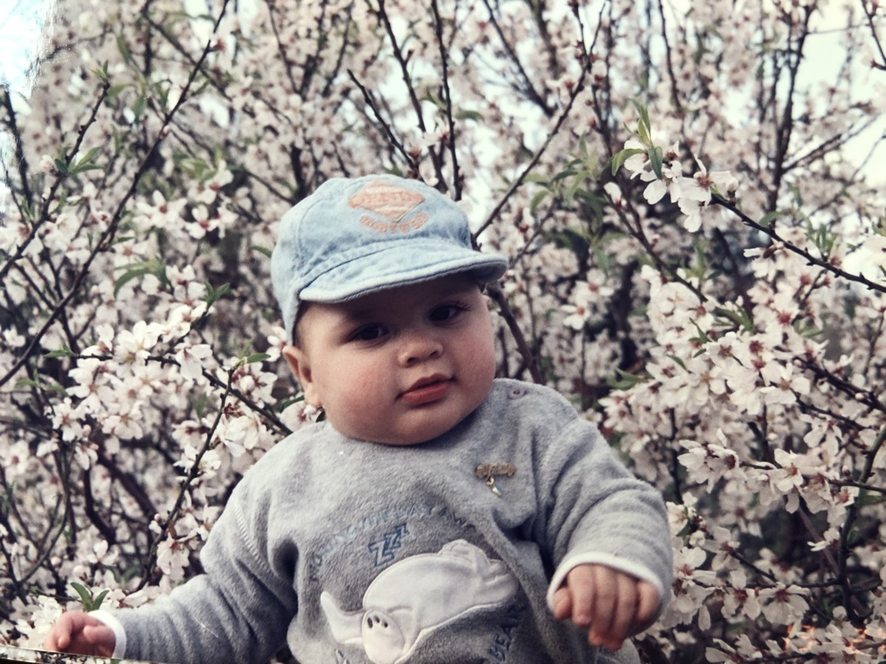
A little curiosity.
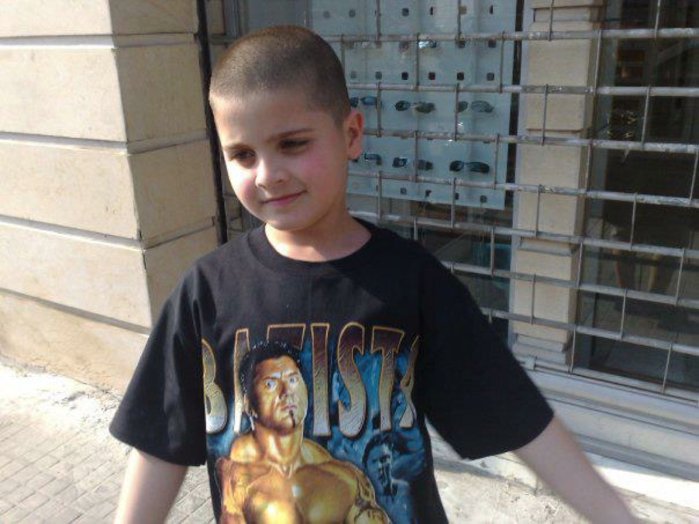
Before the big plans.
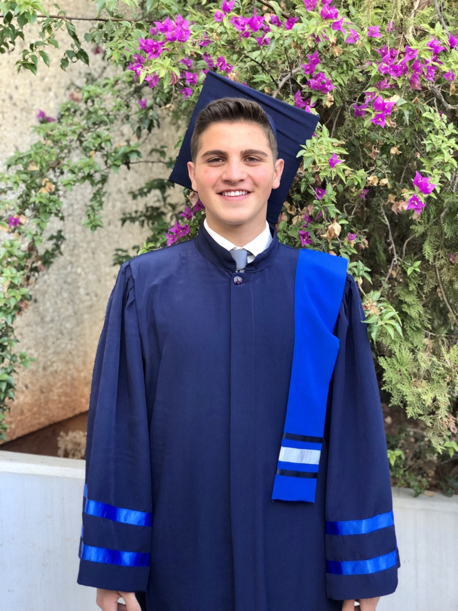
A chapter completed.
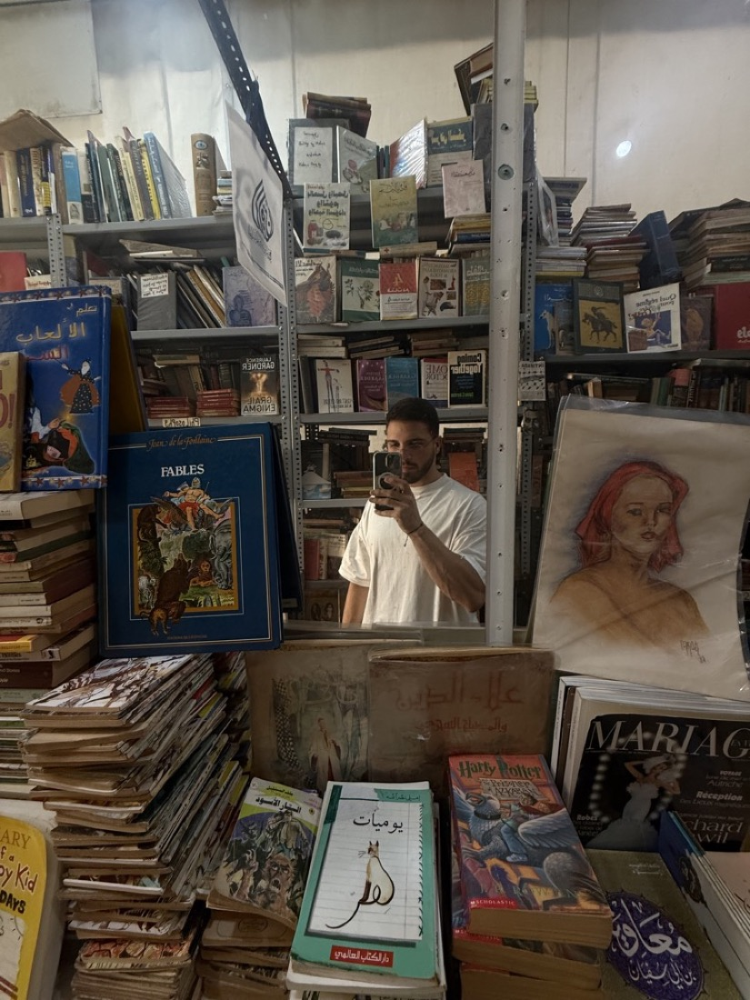
Always curious.
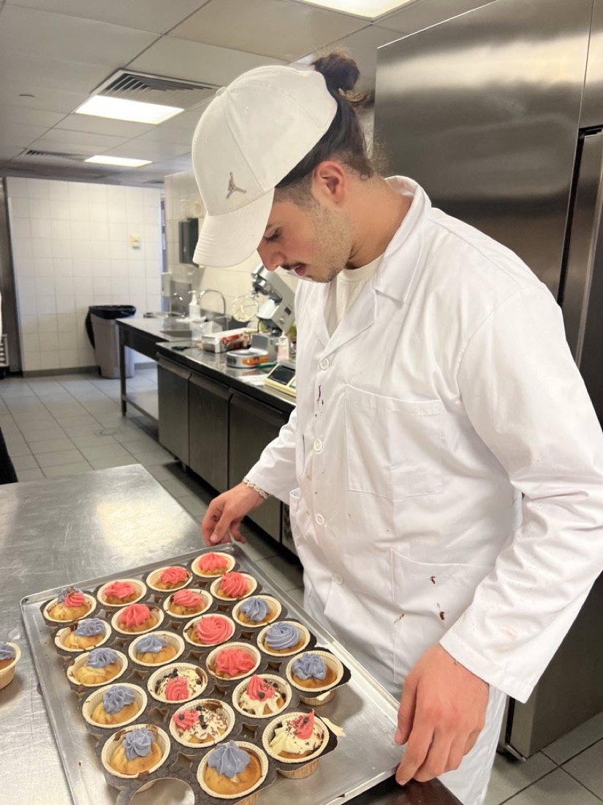
Learning by making.
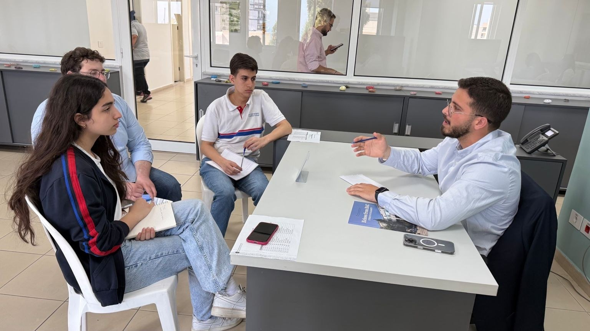
Back at my school. This time, speaking.
A few pieces of me
All of this. Still becoming.
Different chapters. The same curiosity.
Little moments. A life in progress.
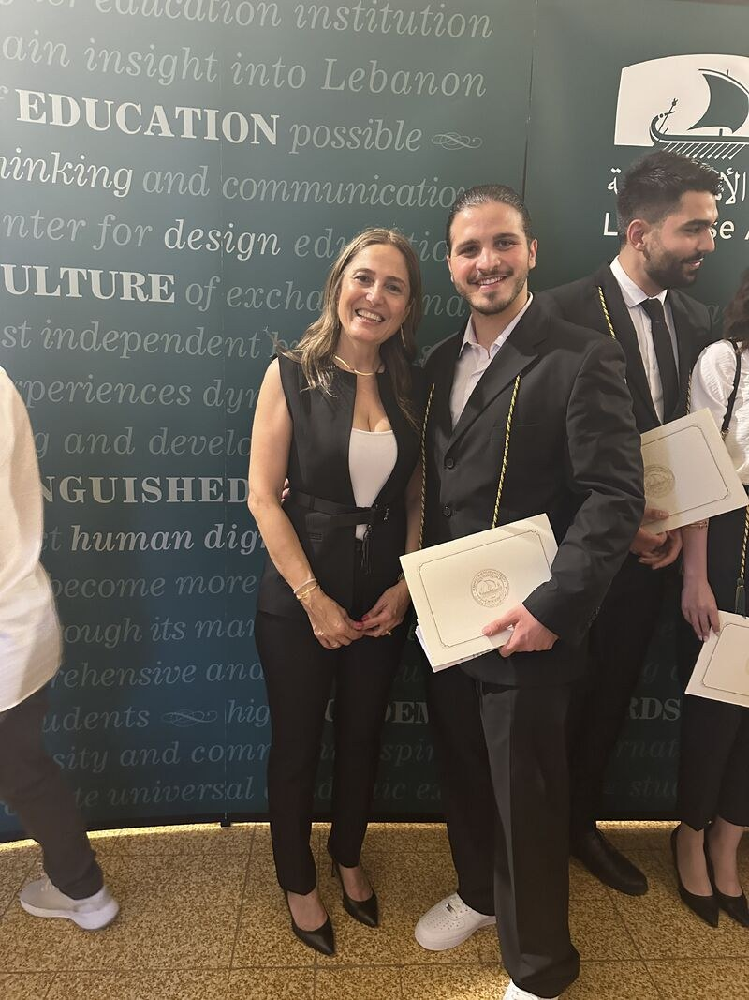
A moment worth keeping.
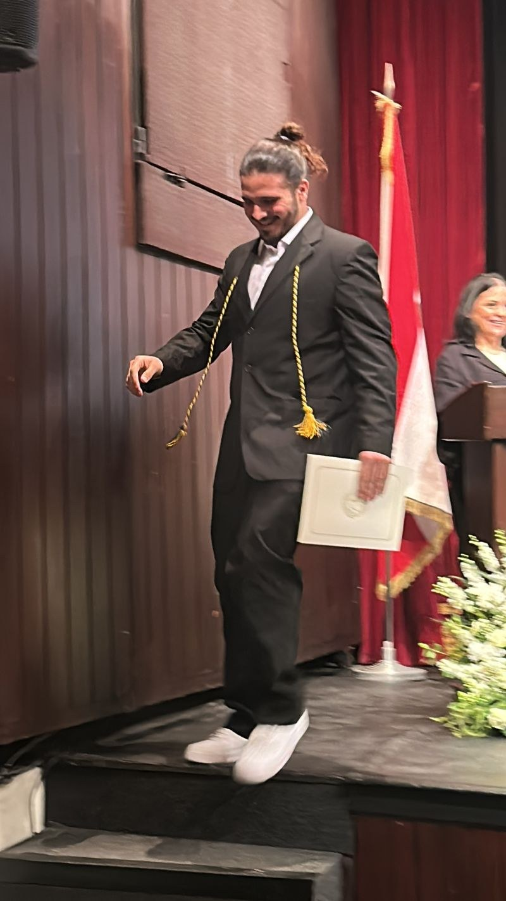
Showing up for the next chapter.
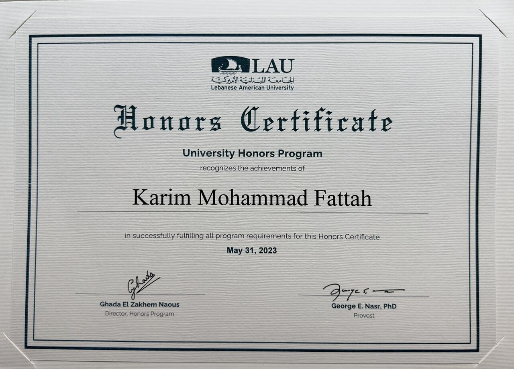
The Honors certificate.
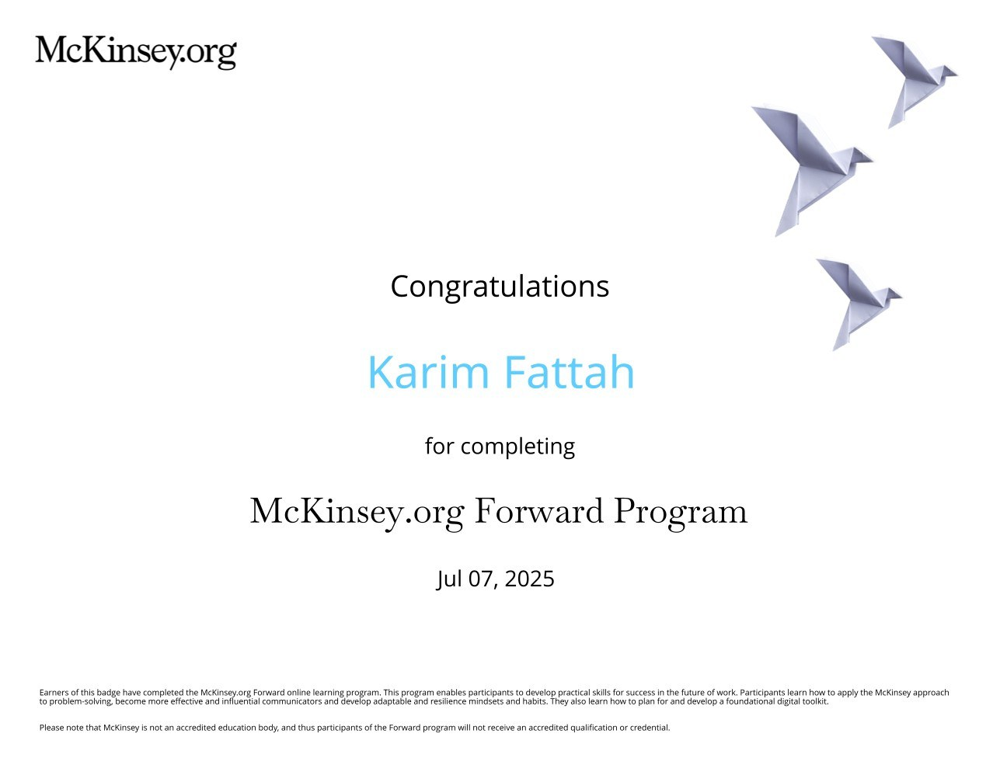
Always a student — McKinsey.org Forward
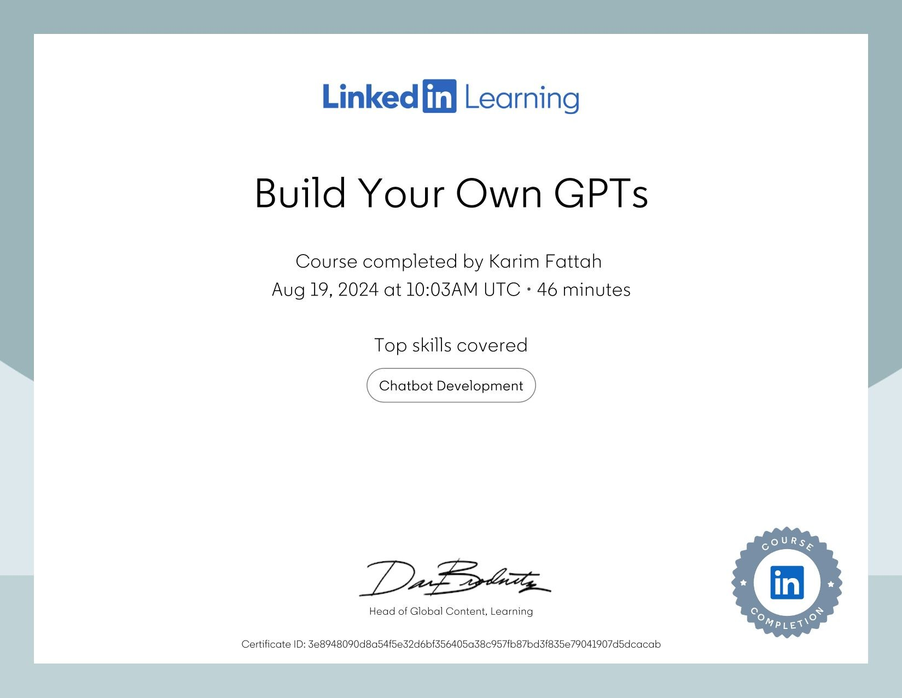
Learning to build with new tools.
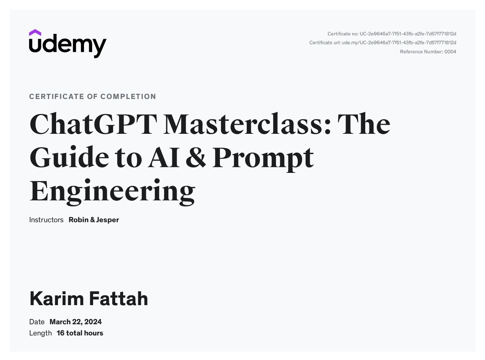
Another page of learning — AI
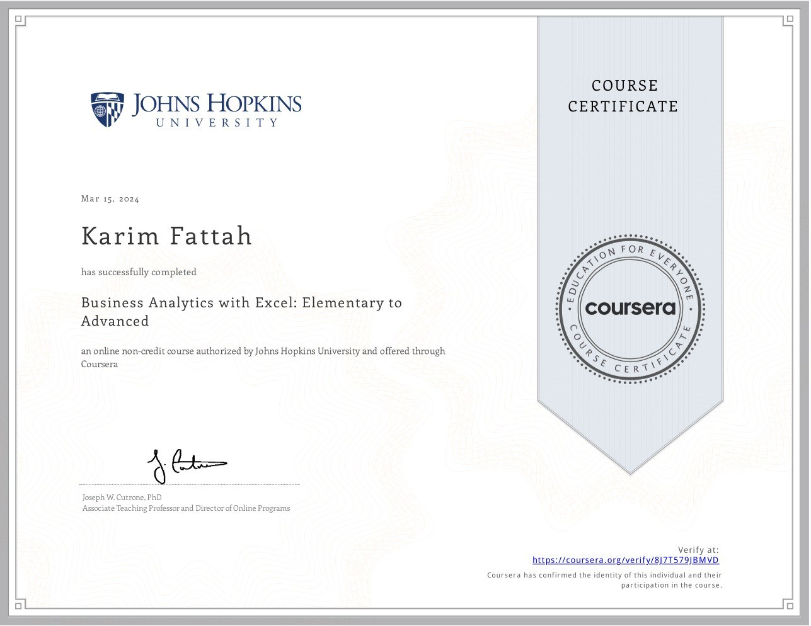
Learning business analytics.
A perspective from the other side
“His resilience, confidence, and personality are what I admire most about him.”